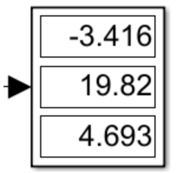
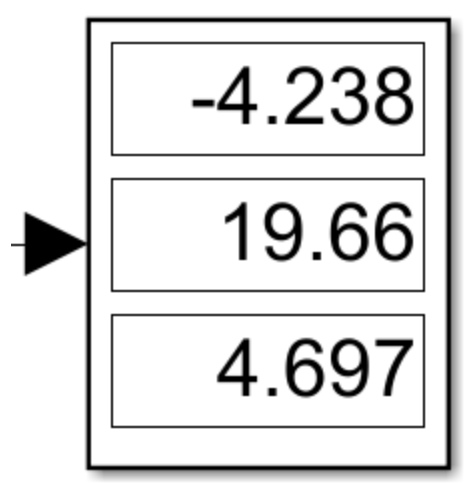
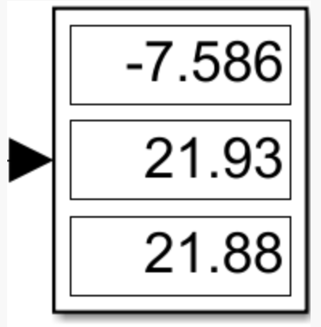
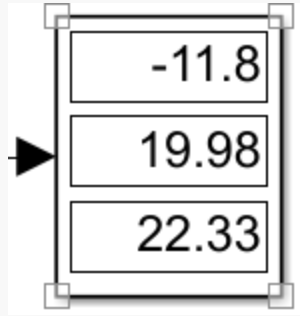
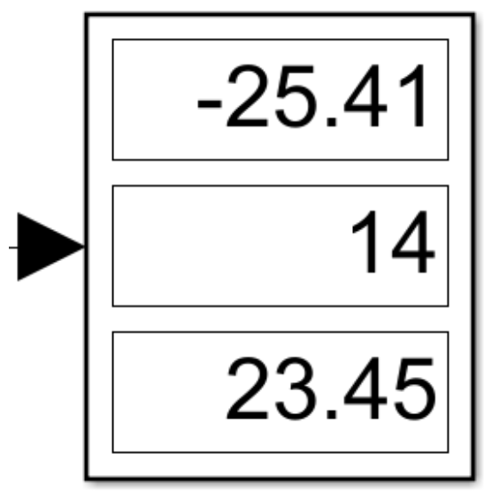
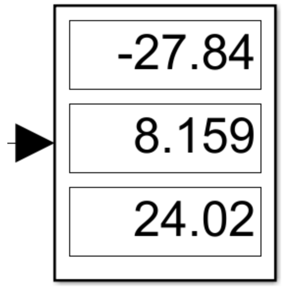

旋翼姿态控制
四元数控制方案
姿态角、目标姿态角转为四元数$q_b$、$q_t$
体轴系到目标轴系，四元数的误差为$q _ { b } ^ { t } = \left( q _ { i } ^ { b } \right) ^ { - 1 } \cdot q _ { i }^t$
此误差也可表示为：
即期望机体轴系绕机体轴系的旋转轴r旋转α角度
将旋转轴的α倍作为角度误差进行控制律计算，当α较小时，2sin(α/2)=α
则，目标的姿态角
示例：

Px4的四元数控制方案
相比于直接用四元数控制，PX4中，先对齐Z轴(限制偏航)，再进行控制。
举例：当前姿态为[0,10,0]，目标姿态为[0,30,10]
计算体轴系到中间轴系的四元数
①求得$q_b$、$q_t$的旋转矩阵
②对旋转矩阵的z列进行对齐(即旋转)，得到体轴系到中间轴系的四元数
③根据示例，体轴到中间轴系需要-5°滚转、19.55°俯仰、0.02°偏航
1
2
3alpha = acos(dot(ez,ezd)/norm(ez)/norm(ezd));
V = cross(ez,ezd)/norm(cross(ez,ezd));
qe_tilt = [cos(alpha/2);sin(alpha/2)*V];
计算中间轴系到目标轴系的四元数，对其偏航进行限制
①地轴系到中间轴系=(地轴系到体轴系)*(体轴系到中间轴系)
②中间轴系到目标轴系=(地轴系到中间轴系)-1*(地轴系到体轴系)
③根据示例，中间轴系到目标轴系需要9.544°偏航

计算地轴系到新目标轴系的四元数
①对目标轴系的偏航限制0.5的系数，得到新目标轴系
②地轴系到新目标轴系的四元数
③根据示例，新的目标四元数为-2.75°滚转、29.89°俯仰、4.494°偏航

计算体轴系到新目标轴系的四元数$q _ { b } ^ { t } = \left( q _ { i } ^ { b } \right) ^ { - 1 } \cdot q _ { i }^t$：
此误差也可表示为：
即期望机体轴系绕机体轴系的旋转轴r旋转α角度
将旋转轴的α倍作为角度误差进行控制律计算，当α较小时，2sin(α/2)=α
则，目标的姿态角
①根据示例，取各系数均为1
②最终得到角速度为-4.23°/s、19.66°/s、4.14°/s，该结果与转为欧拉角后的结果相差不大

Nonlinear Quadrocopter Attitude Control Technical Report论文提出了如下控制律，并证明了其李雅普诺夫稳定性，提出将绕z轴旋转和其他偏转为两种状态，因此增加了中间轴系
对齐Z轴的影响
| 初始姿态 | 目标姿态 | 未对齐z轴 | 对齐z轴 |
|---|---|---|---|
| 0 10 0 |
0 30 10 |
 |  |
| 0 10 0 |
10 30 50 |
 |  |
| 0 10 0 |
-10 30 50 |
 |  |
对比限制偏航前后得到的目标角速度，可以发现，限制后的偏航角速度大幅减小，俯仰角略有增加；偏航角较大时，俯仰和滚转姿态变化较大。
推导过程
链式法则：
轴系定义：
地轴N、体轴B、目标体轴T、中间轴系M(对齐了z轴的轴系)
- 体轴系→中间轴系$q_b^m$(轴在地轴系，仅通过旋转对齐z轴)
- 体轴系→中间轴系$q_b^{\prime m}=\left(q_i^b\right)^{-1} \cdot q_b^m \cdot q_i^b$(轴在体轴系)
- 地轴系→中间轴系$q_i^m=q_i^b \cdot q_b^m$
- 中间轴系→目标轴系$q_m^t=\left(q_i^m\right)^{-1} \cdot q_i^t$，之后限制偏航
- 地轴系→目标轴系$q_i^t=q_i^m \cdot q_m^t$，
- 体轴系→目标轴系，$q_i^b$到$q_i^t$的误差$q_b^t=\left(q_i^b\right)^{-1} \cdot q_i^t$
当前姿态、目标姿态都是相对于地轴系的一个旋转
当前姿态$\overrightarrow{q}=\left[\begin{array}{llll}q_{0} & q_{1} & q_{2} & q_{3}\end{array}\right]$，目标姿态$\overrightarrow{q_d}=\left[\begin{array}{llll}q_{d 0} & q_{d 1} & q_{d 2} & q_{d 3}\end{array}\right]$
则当前姿态的旋转矩阵为：
目标姿态的旋转矩阵为：
姿态z轴的单位向量
则，对齐z轴，由${ }^N \vec{e}_z{ }^B$到${ }^N \vec{e}_{zd}{ }^B$的四元数可以表示为【体轴系到中间轴系的旋转$q_b^{\prime m}$】：
这个四元数的转轴是在地轴系下的，需要转到体轴系【体轴系到中间轴系的旋转$q_b^m$】：
则，表示倾斜运动的四元数【即地轴系到中间轴系$q_i^m=\vec{q} \cdot q_b^m\left(\vec{q}=q_i^b\right)$】：
表示旋转运动的四元数【$q_m^t=\left(q_i^m\right)^{-1} \cdot \vec{q}_d\left(\vec{q}_d=q_i^t\right)$】：
此时，$\vec{q}_{d, \text { mix }}$相当于绕z轴旋转了αmix(中间轴系到目标轴系$q_m^t$)
即，
此处加入偏航运动的限制k，k为yaw权重(中间轴系到目标轴系，限制$q_m^t$)
得到最终的期望四元数【$q_i^t=q_i^m \cdot q_m^t$】：
四元数的误差为【$q_b^t=\left(q_i^b\right)^{-1} \cdot q_i^t$】：
此误差也可表示为：
即期望机体轴系绕机体轴系的旋转轴r旋转α角度
将旋转轴的α倍作为角度误差进行控制律计算，当α较小时，2sin(α/2)=α
则，目标的姿态角
增加偏航角速度前馈